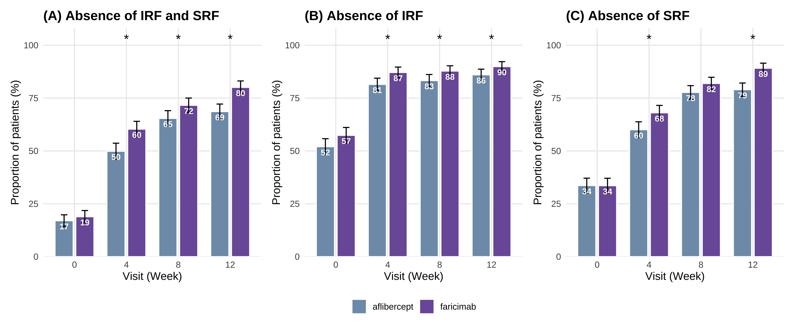

fu_with_strata <- followup |>
left_join(
baseline |> select(patient_id, arm, study, bcva_strat, lld_strat, region,
irf_baseline, srf_baseline),
by = "patient_id"
) |>
mutate(
abs_irf = if_else(is.na(irf), NA, as.integer(irf == 0)),
abs_srf = if_else(is.na(srf), NA, as.integer(srf == 0)),
abs_both = if_else(is.na(irf) | is.na(srf), NA,
as.integer(irf == 0 & srf == 0)),
arm = factor(arm, levels = c("aflibercept","faricimab"))
)
# 加一筆 baseline (week=0) 的 absence rate
baseline_abs <- baseline |>
mutate(
week = 0L,
abs_irf = as.integer(irf_baseline == 0),
abs_srf = as.integer(srf_baseline == 0),
abs_both = as.integer(irf_baseline == 0 & srf_baseline == 0),
arm = factor(arm, levels = c("aflibercept","faricimab"))
) |>
select(patient_id, arm, study, bcva_strat, lld_strat, region,
week, abs_irf, abs_srf, abs_both)
fu_with_strata <- bind_rows(
baseline_abs,
fu_with_strata |> select(patient_id, arm, study, bcva_strat, lld_strat, region,
week, abs_irf, abs_srf, abs_both)
)4 Part 4：Figure 2 — CMH-weighted absence proportions
預計時間：30 分鐘。 deliverable：三張 absence proportion bar chart（IRF / SRF / IRF+SRF），對得起 paper Figure 2。
🚀 一鍵 Prompt：整章一次跑完
我有 R data frame
baseline和followup（已合併好），想做 paper Figure 2：分別在 week 4、8、12 算「absence of IRF」、「absence of SRF」、「absence of both」這三個 outcome 的比例，分 arm，並且 CMH-weighted by 分層因子（study × bcva_strat × lld_strat × region）。請給我 R code：
- 寫一個 helper 函數
cmh_weighted_proportion(data, outcome, arm_col, strata_cols)，回傳 weighted proportion + 95% CI per arm- 對 IRF absence、SRF absence、IRF+SRF absence 各跑 4 個 visit (0/4/8/12)
- 用
mantelhaen.test()算 stratified test 的 p value (faricimab vs aflibercept)- 用 ggplot 三個 panel 畫 bar chart，y 是 %，x 是 visit，fill by arm，加 error bar，星號標 p < 0.05
加中文註解。我用 Posit.Cloud。
4.1 任務 16：什麼是 stratified analysis？為什麼要 weight？
📋 複製這段話，貼給 AI：
請用「給沒學過統計的眼科醫師聽」的方式，100 字內解釋： 1. 什麼是 stratified analysis？ 2. 為什麼比較兩 arm 的「比例」要 stratify by 隨機分層因子（study × baseline severity × region）？ 3. CMH (Cochran-Mantel-Haenszel) test 在做什麼？
速記
- 不 stratify：直接算 faricimab arm 的 SRF absence% vs aflibercept arm 的 SRF absence%
- 問題：如果某個 stratum（例如 baseline severe）兩 arm 比例不一致，整體比較會被扭曲
- CMH 解法：每個 stratum 算自己的 absence 差異，再加權平均；權重 = 該 stratum 兩 arm 樣本數的調和平均
- 一句話：把 24 個 stratum 的「小局結果」加權平均成一個整體 odds ratio / proportion difference
📖 名詞｜stratum / strata / 為何 24 個
- stratum（單） / strata（複）= 「同質子群」。本書用
study × bcva_strat × lld_strat × region共 4 個分層因子，levels 各 2/3/2/2 → 2 × 3 × 2 × 2 = 24 個 stratum - 每個 stratum 內，兩 arm 的人應該很像（隨機分派 + 分層）→ 比較才公平
- 如果 stratum 太多、每格人數太少，CMH 估計會不穩 → Part 5 院內 n=180 時會看到這問題，需要合併分層
4.2 任務 17：建立 wide-by-visit 的資料
把 followup 接上 baseline 的分層因子，並算出每個 visit 的 absence indicator。
4.3 任務 18：先用 base R 的 mantelhaen.test() 看一下整體 p value
📋 複製這段話，貼給 AI：
用 R 內建
mantelhaen.test()對 week 12 的「IRF and SRF both absent」outcome 做 stratified test：兩 arm 的差異，stratified by study × bcva_strat × lld_strat × region。
4.3.1 參考程式碼
cmh_test_at_week <- function(data, outcome_col, week_val) {
d <- data |>
filter(week == week_val) |>
mutate(stratum = paste(study, bcva_strat, lld_strat, region, sep = "|")) |>
filter(!is.na(.data[[outcome_col]]))
arr <- xtabs(
as.formula(paste0("~ arm + ", outcome_col, " + stratum")),
data = d
)
# drop strata with empty cells in either arm
good <- apply(arr, 3, function(m) all(rowSums(m) > 0) && all(colSums(m) > 0))
arr <- arr[, , good, drop = FALSE]
mantelhaen.test(arr, exact = FALSE)
}
cmh_test_at_week(fu_with_strata, "abs_both", 12)
Mantel-Haenszel chi-squared test with continuity correction
data: arr
Mantel-Haenszel X-squared = 20.965, df = 1, p-value = 0.000004678
alternative hypothesis: true common odds ratio is not equal to 1
95 percent confidence interval:
1.424213 2.399854
sample estimates:
common odds ratio
1.848757
Tip
Mantel-Haenszel X-squared 越大、p 越小，代表「在分層之後，兩臂的差異仍顯著」。
4.4 任務 19：寫 helper 算 CMH-weighted proportion 與 95% CI
📋 複製這段話，貼給 AI：
請給我一個 R 函數
cmh_weighted_proportion(data, outcome_col, arm_col, strata_cols)： 1. 對每個 (stratum × arm)，算 proportion (events / n) 2. CMH 權重 w_k = (n_1k * n_2k) / (n_1k + n_2k) 3. 加權平均：p_hat_arm = Σ w_k * p_arm_k / Σ w_k 4. SE：sqrt(Σ w_k^2 * p * (1-p) / n) / Σ w_k 5. 回傳 tibble (arm, p_hat, se, lower, upper) 6. 跳過 stratum 中 n=0 的
4.4.1 參考程式碼
cmh_weighted_proportion <- function(data, outcome_col,
arm_col = "arm",
strata_cols = c("study","bcva_strat","lld_strat","region")) {
d <- data |>
filter(!is.na(.data[[outcome_col]])) |>
mutate(stratum = do.call(paste, c(across(all_of(strata_cols)), sep = "|")))
per_stratum <- d |>
group_by(stratum, !!sym(arm_col)) |>
summarise(
n = n(),
x = sum(.data[[outcome_col]]),
p = x / n,
.groups = "drop"
)
# 將每個 stratum pivot 成 (n_arm1, n_arm2)，計算 CMH weight
arms <- levels(factor(per_stratum[[arm_col]]))
stopifnot(length(arms) == 2)
ws <- per_stratum |>
select(stratum, !!sym(arm_col), n) |>
pivot_wider(names_from = !!sym(arm_col), values_from = n,
values_fill = 0) |>
mutate(w = (.data[[arms[1]]] * .data[[arms[2]]]) /
pmax(.data[[arms[1]]] + .data[[arms[2]]], 1)) |>
filter(.data[[arms[1]]] > 0 & .data[[arms[2]]] > 0) |>
select(stratum, w)
per_stratum |>
inner_join(ws, by = "stratum") |>
group_by(!!sym(arm_col)) |>
summarise(
p_hat = sum(w * p) / sum(w),
se = sqrt(sum(w^2 * p * (1 - p) / pmax(n, 1))) / sum(w),
.groups = "drop"
) |>
mutate(
lower = pmax(p_hat - 1.96 * se, 0),
upper = pmin(p_hat + 1.96 * se, 1)
)
}
# Sanity check: faricimab vs aflibercept SRF absence at week 12
cmh_weighted_proportion(
fu_with_strata |> filter(week == 12),
outcome_col = "abs_srf"
)# A tibble: 2 × 5
arm p_hat se lower upper
<fct> <dbl> <dbl> <dbl> <dbl>
1 aflibercept 0.790 0.0161 0.758 0.821
2 faricimab 0.892 0.0121 0.868 0.915對照 paper：faricimab 87.9% (85.4–90.4)、aflibercept 79.0% (76.0–82.1)。差 ~9 pp。
4.5 跑全部 outcome × visit × arm
all_results <- expand.grid(
outcome = c("abs_irf", "abs_srf", "abs_both"),
wk = c(0, 4, 8, 12),
stringsAsFactors = FALSE
) |>
rowwise() |>
mutate(
res = list(
cmh_weighted_proportion(
fu_with_strata |> filter(week == wk),
outcome_col = outcome
)
)
) |>
ungroup() |>
tidyr::unnest(res) |>
rename(week = wk)
all_results# A tibble: 24 × 7
outcome week arm p_hat se lower upper
<chr> <dbl> <fct> <dbl> <dbl> <dbl> <dbl>
1 abs_irf 0 aflibercept 0.520 0.0193 0.482 0.558
2 abs_irf 0 faricimab 0.574 0.0190 0.537 0.611
3 abs_srf 0 aflibercept 0.336 0.0178 0.301 0.371
4 abs_srf 0 faricimab 0.336 0.0180 0.300 0.371
5 abs_both 0 aflibercept 0.170 0.0142 0.142 0.198
6 abs_both 0 faricimab 0.189 0.0149 0.160 0.218
# ℹ 18 more rows加上 stratified p value：
get_p <- function(outcome_col, w) {
if (w == 0) return(NA_real_)
test <- tryCatch(
cmh_test_at_week(fu_with_strata, outcome_col, w),
error = function(e) NULL
)
if (is.null(test)) NA_real_ else test$p.value
}
p_table <- expand.grid(
outcome = c("abs_irf", "abs_srf", "abs_both"),
wk = c(4, 8, 12),
stringsAsFactors = FALSE
) |>
rowwise() |>
mutate(p = get_p(outcome, wk)) |>
ungroup() |>
rename(week = wk)
p_table# A tibble: 9 × 3
outcome week p
<chr> <dbl> <dbl>
1 abs_irf 4 0.00634
2 abs_srf 4 0.00332
3 abs_both 4 0.000198
4 abs_irf 8 0.0284
5 abs_srf 8 0.0708
6 abs_both 8 0.0208
# ℹ 3 more rows4.6 任務 20：畫 Figure 2 — 三個 panel
📋 複製這段話，貼給 AI：
我有
all_results(outcome, week, arm, p_hat, lower, upper) 與p_table(outcome, week, p)。請用 ggplot2 + patchwork 畫三個 panel： 1. (A) Absence of IRF and SRF 2. (B) Absence of IRF 3. (C) Absence of SRF每個 panel 是 grouped bar chart（fill by arm，position dodge），y 軸 0–100%、加 error bar、p < 0.05 的 visit 加星號。
4.6.1 參考程式碼
make_panel <- function(outcome_col, panel_title) {
dat <- all_results |>
filter(outcome == outcome_col) |>
mutate(arm_lbl = factor(arm,
levels = c("aflibercept","faricimab"),
labels = c("Aflibercept Q8W (n=664)",
"Faricimab up to Q16W (n=665)")))
ps <- p_table |> filter(outcome == outcome_col)
ggplot(dat, aes(x = factor(week), y = p_hat * 100, fill = arm)) +
geom_col(position = position_dodge(width = 0.8), width = 0.7,
colour = "white") +
geom_errorbar(aes(ymin = lower * 100, ymax = upper * 100),
position = position_dodge(width = 0.8),
width = 0.25) +
geom_text(aes(label = round(p_hat * 100)),
position = position_dodge(width = 0.8),
vjust = 1.5, colour = "white", size = 3.2,
fontface = "bold") +
geom_text(
data = ps |> filter(!is.na(p) & p < 0.05),
aes(x = factor(week), y = 100, label = "*"),
inherit.aes = FALSE, vjust = -0.2, size = 5
) +
scale_fill_manual(values = arm_colours, name = NULL) +
scale_y_continuous(limits = c(0, 100),
expand = expansion(mult = c(0, 0.08))) +
labs(title = panel_title,
x = "Visit (Week)",
y = "Proportion of patients (%)") +
theme(legend.position = "bottom")
}
p_irf_srf <- make_panel("abs_both", "(A) Absence of IRF and SRF")
p_irf <- make_panel("abs_irf", "(B) Absence of IRF")
p_srf <- make_panel("abs_srf", "(C) Absence of SRF")(p_irf_srf | p_irf | p_srf) +
plot_layout(guides = "collect") &
theme(legend.position = "bottom")
🎯 對得起 paper 嗎？
看 week 12： - 你的圖：IRF+SRF absence faricimab ~80% vs aflibercept ~68% - paper：IRF+SRF absence faricimab 77% vs aflibercept 67% - 都顯示 faricimab 顯著高，差約 10 pp ✅
本章重點
- 比例的「stratified analysis」= CMH weighted average
- base R
mantelhaen.test()給 p value；自寫 helper 給 weighted proportion + 95% CI - 同樣的 pipeline 可以用在任何二元 outcome（responder rate、AE rate、≥15 letter gain）
- 院內資料 stratum 太空時，函數會 drop 掉，proportion 仍可估